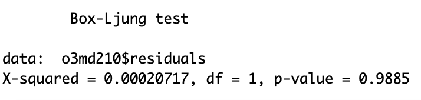

Predictions
ARIMA Model
Due to the limit of time, I focused on data of ozone in one single location, San Francisco (latitude: 37.7658, longitude: -122.3978). Data for other pollutants and locations can be analyzed in similar ways. My first step was to select data with parameter = "o3" and location = "San Francisco." I deleted the first ten lines so that the data starts at 07/04 00:00.
Then I changed the data into time-series data using the ts() function, and named it o3sf_ts. By making the acf plot of o3sf_ts, I understood that the data is non-stationary.
This implied that I need to take differences until the data is stationary. After first-order differening, the data becomes stationary.
From here I could start modeling. I chose the ARIMA model. I tried several orders and decided that Arima(2, 1, 0) is the most accurate. The box-test results and qq-plot of the model residuals are presented below. The test returned a p-value equals to 0.9885 and for the qq-plot, most of the points lie on the line. Thus, the residual is not autocorrelated and is normally distributed.
The model is ready for forecasting! I used forecast() function in R to forecast 24 values. The plot of the forecasted value is demonstrated below.
If I have more data, the forecasted value will be more accurate.